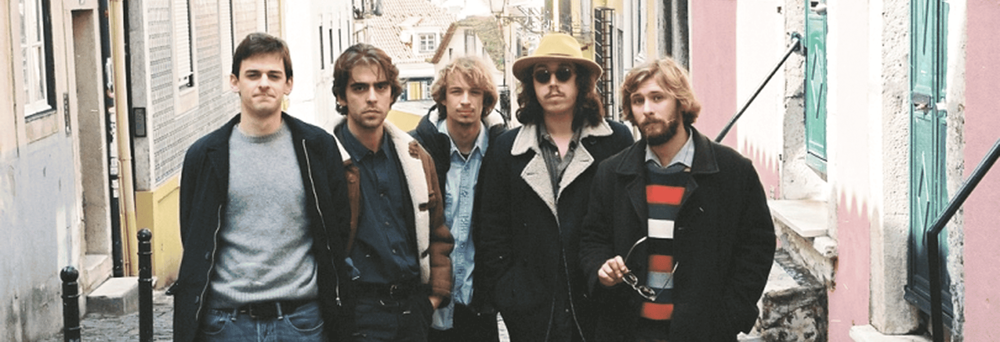
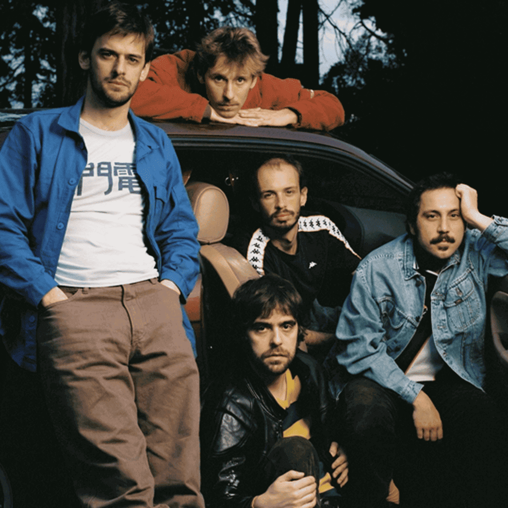

Ganso
12/julho


Sobre
Os GANSO são uma banda portuguesa de rock alternativo formada em 2015, em Lisboa. Destacam-se pela sonoridade vibrante, letras irreverentes e uma atitude descontraída que conquistou a nova cena indie em Portugal. Os seus concertos contam com imensa interação com o público.